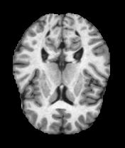
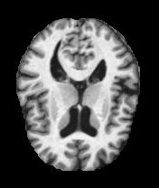
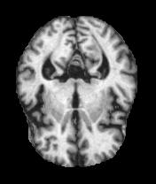

Brain MRI Upload
Drag & drop MRI scan here
or click to browse local files (JPEG, PNG)
Quick Test Templates



Diagnostic Results
Awaiting brain MRI image selection.
Select a sample image or upload a scan to run the classification model.
Primary Diagnosis
Non Demented
0.0%
Confidence
Condition Guide
No prediction loaded yet.
Scan History
No clinical logs saved in this session. Runs will save locally.